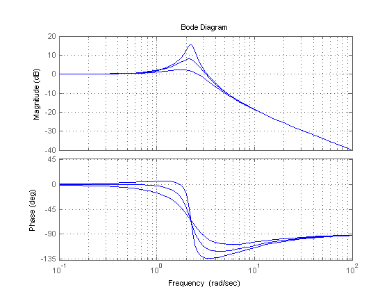

Accessing and Modifying the Model Data
This demo shows how to access or edit parameter values and metadata in LTI objects.
Contents
Accessing Data
The tf, zpk, ss, and frd commands create LTI objects that store model data in a single MATLAB® variable. This data includes model-specific parameters (e.g., A,B,C,D matrices for state-space models) as well as generic metadata such as input and output names. The data is arranged into a fixed set of data fields called properties.
You can access model data in the following ways:
- The get command
- Structure-like dot notation
- Data retrieval commands
For illustration purposes, create the SISO transfer function (TF):
G = tf([1 2],[1 3 10],'inputdelay',3)
Transfer function:
s + 2
exp(-3*s) * --------------
s^2 + 3 s + 10
To see all properties of the TF object G, type
get(G)
num: {[0 1 2]}
den: {[1 3 10]}
Variable: 's'
ioDelay: 0
InputDelay: 3
OutputDelay: 0
Ts: 0
TimeUnit: ''
InputName: {''}
InputUnit: {''}
InputGroup: [1x1 struct]
OutputName: {''}
OutputUnit: {''}
OutputGroup: [1x1 struct]
Name: ''
Notes: {}
UserData: []
The first four properties num, den, ioDelay, and Variable are specific to the TF representation. The remaining properties are common to all LTI representations. You can use help tf.num to get more information on the "num" property and similarly for the other properties.
To retrieve the value of a particular property, use
G.InputDelay % get input delay value
ans =
3
You can use abbreviations for property names as long as they are unambiguous, for example:
G.iod % get transport delay value
ans =
0
G.var % get variable
ans = s
Quick Data Retrieval
You can also retrieve all model parameters at once using tfdata, zpkdata, ssdata, or frdata. For example:
[num,den,Ts] = tfdata(G)
num =
[1x3 double]
den =
[1x3 double]
Ts =
0
Note that the numerator and denominator are returned as cell arrays. This is consistent with the MIMO case where num and den contain cell arrays of numerator and denominator polynomials (with one entry per I/O pair). For SISO transfer functions, you can return the numerator and denominator data as vectors by using a flag, for example:
[num,den] = tfdata(G,'v')
num =
0 1 2
den =
1 3 10
Editing Data
You can modify the data stored in LTI objects by editing the corresponding property values with set or dot notation. For example, for the transfer function G created above,
G.Ts = 1;
changes the sampling time from 0 to 1, which redefines the model as discrete:
G,
Transfer function:
z + 2
z^(-3) * --------------
z^2 + 3 z + 10
Sampling time: 1
The set command is equivalent to dot assignment, but also lets you set multiple properties at once:
set(G,'Ts',0.1,'Variable','q') G,
Transfer function:
q + 2
q^(-3) * --------------
q^2 + 3 q + 10
Sampling time: 0.1
Sensitivity Analysis Example
Using model editing together with LTI array support, you can easily investigate sensitivity to parameter variations. For example, consider the second-order transfer function

You can investigate the effect of the damping parameter zeta on the frequency response by creating three models with different zeta values and comparing their Bode responses:
s = tf('s'); % Create 3 transfer functions with num=s+1 and den=1 H = repsys(s+5,[1 1 3]); % Specify denominators using 3 different zeta values zeta = [1 .5 .2]; for k=1:3 H(:,:,k).den = [1 2*zeta(k) 5]; % zeta(k) -> k-th model end % Plot Bode response bode(H), grid